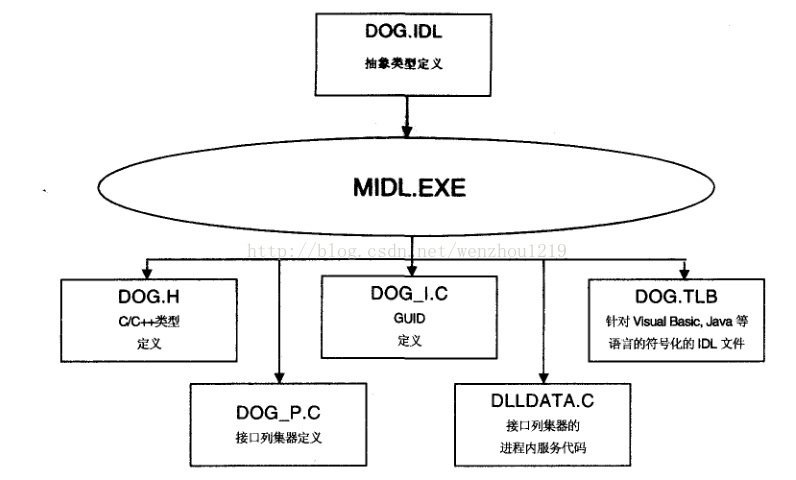
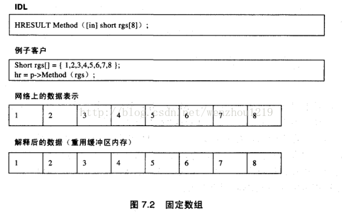
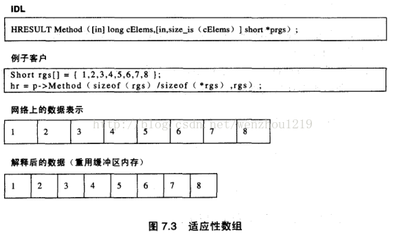
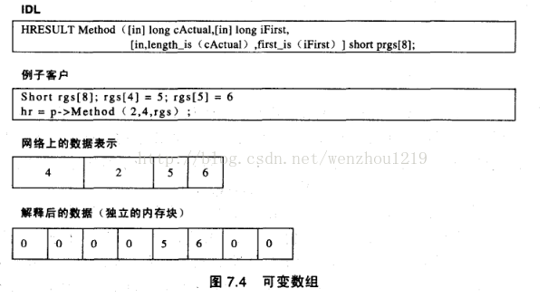
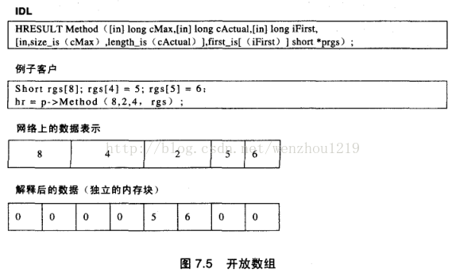

编写COM组件的IDL指令
简介
之前讲的COM都是手动编写的，上一节讲到借助MFC和下一节要讲到的ATL这些框架可以大大减少代码编写量，然而这还不够，还是太麻烦，因为COM遵循一套标准的规则，因此我们自然想到能不能使用一种描述语言，描述我们想要的COM形式和结构，然后由工具来做实际编写工作呢？
很幸运，微软实现了这个功能，实际上通过编写IDL的方法来编写COM也是微软推荐的做法，这样做好处在于：
1.可以减少代码编写工作量
2.对于底层尤其是在编写进程外组件时做到透明，减小编写难度
3.生成.tlb类型库，包含了相关二进制的符号信息，从而允许其他语言来动态调用
方法
IDL编译有两种方法：
1.COM使用Win32 SDK包含的MIDL.exe来编译IDL，此时需要注意相关路径的引用问题，最简单的就是$WindowsSDK/bin中的midl.exe/midlc.exe和要编译的idl拷贝到$WindowsSDK/include目录中，然后命令行执行【midl.exe idl文件名】
2.在VS2008中直接编写IDL，编译时会自动调用MIDL生成对应文件
实例注释
比如，对于编写好的DOG.IDL，编译后生成文件如下，

一个典型的IDL结构如下，它包含了常见的IDL定义
cpp_quote("//------generate from idl----------")//生成的C++代码中添加注释
import "oaidl.idl";
import "unknwn.idl"//接口定义[
object,//所定义的接口是一个COM接口
uuid(7D796BB3-E479-42C9-99F9-FC2189CF8E78),//相应的接口IID
helpstring("IDog 接口"),//对应字符串会放入类型库pointer_default(unique)//默认的次级指针类型为unique
]
interface IDog : IUnknown{
[helpstring("主人性别")]typedef enum tagGENDER
{
Female,
Male
}GENDER;
[helpstring("主人信息")]typedef structtagHumanInfo
{longnHumanId;
GENDER eGender;
} HUMAN;
[helpstring("狗狗信息")]typedef structtagDogInfo
{long nDogId;
[unique] HUMAN *pOwner;
} DOG;
[helpstring("获取接口IOperate")]HRESULT GetInterface([in] REFIID nClsid, //in表示输入参数
[out, iid_is(nClsid)] void** pInterface)//out表示输出参数,iid_is指明对应的接口IID
[helpstring("方法SayHello")]HRESULT SayHello([in,string] WCHAR* szWord)//string指明输入参数是string类型,方便传递时动态计算长度
[helpstring("方法SayHi")]HRESULT SayHi([in,string] BSTR szWord);
[helpstring("方法GetChildAges")]HRESULT GetChilds([out] SAFEARRAY(long) *pArrAge)//注意SAFEARRAY需要指明成员类型,作为返回值必须为指针
[helpstring("方法GetProperty")]HRESULT GetGetProperty([in,string] BSTR szPropKey,
[out,retval] VARIANT* pVal)//VARIANT可变参数,作为返回值必须为指针
[helpstring("方法GetAge")]HRESULT GetAge([out, retval] long* pVal)//retval经常和out混用,表示返回值
[helpstring("方法TranslateWord")]HRESULT TranslateWord([in, string] BSTR szInput,
[out,string,retval] BSTR* pszOutput)//BSTR作为返回值必须为指针
[propget, helpstring("属性-Get")]//propget和propput 分别对应属性的get和setHRESULT Weight([out, retval] long* pVal);
[propput, helpstring("属性-Put")]HRESULT Weight([in] long nVal);
[helpstring("传递指定量的狗骨头，返回实际吃的量-EatBones")]HRESULT EatBones([in] long nSize,
[out] long *pActual,
[out, size_is(nSize), length_is(*pActual)] long* pData);
};
//类型库定义，只能包含一个，所有的类对象coclass都必须在其中定义
[
uuid(63CD81C0-FD49-4153-A6CF-56BC8BA97935),
version(1.0),//类型库版本号//lcid(9), //定义库的地域id,9=英文
helpstring("CAnimalObject Type Library")
]
library AtlBaseComLib
{
importlib("stdole2.tlb");
[
uuid(A0A0C1F6-B5F4-42D1-80A2-C4D47B99DC2D),
helpstring("AnimalObject 组件对象")
]
coclass CAnimalObject//coclass指明类对象
{
[default] interface IDog;//默认获得的接口指针,一个类对象只能定义一个
};
};一个典型的IDL结构如下，它包含了常见的IDL定义
说明
已经写的注释不再详细说明，主要讲COM IDL编写中的注意事项：
1.IDL中的指针
考虑如下一个常见IDL定义
HRESULT Method([in] short* p, [in] short* p1)
a) p=null的时候，代理存根如何传递呢？很显然按照原始数据是没法传递的，这种指针成为ref类型指针（引用指针）
b) 如果非要允许传递null指针，可以指明指针为unique类型（单值指针），这种指针在列集传递时使用额外数据标记这是null指针
c) 再考虑如下,如果p=p1,按照通常处理过程，p和p1是指向不同对象的，如果是表示可能指明同一数据，需要指明为ptr类型（全指针），这时候列集器会检查其他ptr指针是否有重复，一般不使用
d) COM中返回类型都是HRESULT，如果要实现
long GetAge()这种函数，在这里可以通过标记指针为retval类型(返回类型)，IDL定义如下
HRESULT GetAge([out,retval] long* pVal)
在C++中映射为如下函数
HRESULT _stdcall GetAge(long* pVal)
HRESULT标记调用状态
在Java等语言中映射为
long GetAge()
HRESULT被自动转为Java异常
COM中一般是调用者分配内存，由组件填充实际内容，因此要求指针类型的[out]参数必须为ref类型。
考虑如下IDL
typedef structtagDogInfo {long nDogId; HUMAN *pOwner; } DOG; HRESULT GetDogInfo([out, retval] DOG* pDogInfo)
这里pDogInfo称为 顶级指针，定义在结构体中的指针pOwner称为 内嵌指针，内嵌指针可以无限嵌套。
默认顶级指针为ref类型，可使用pointer_default指明默认的内嵌指针类型。
这里调用分配一个结构体，指针pDogInfo传给组件，组件实现中需要分配HUMAN实际内存，填充指针pOwner。但是不同的模块的运行库不一样，所以传统的内存分配无法实现跨模块调用，这里一般使用CoTaskMemAlloc/CoTaskMemReAlloc/CoTaskMemFree，在组件分配内存，在客户释放。
详细的指针和内存请参考《COM本质论》最后一章。
2.IDL中的数组
常见数组是固定数组，可IDL定义如下
HRESULT Method1([in] short arr[8])
对应传递结构如下

这种只能传递指定长度的数组，为了传递可变长度的数组，IDL引入适应性数组
HRESULT Method2([in] long nSize, [in, size_is(nSize)] short *pArr) HRESULT Method2([in] long nSize, [in, max_is(nSize-1)] short *pArr)
size_is和max_is等价，前者指明数组长度，后者指明数组最大索引，缓冲区接收到的数据就是传给方法的参数数组数据，对应传递结构如下

大多数时候我们传递给组件一个数组，让他填充数组内容，如下
HRESULT Method3([in] long nSize, [out, size_is(nSize)] short *pArr)
如果需要我们传递的数组长度为8，但是实际回传的数据只有2个，这样远程传输时会增加不必要的带宽，为此IDL引入 可变数组，可以指明实际传递的数据长度，此时如下定义
HRESULT Method4([in, length_is(2)] long arr[8])HRESULT Method4([in, first_is(2), length_is(5)] long arr[8])HRESULT Method4([in, first_is(2), last_is(6)] long arr[8])
这里 length_is指明数组实际传递的数据长度， first_is和last_is分别标记当前传递的数据的起始和结束索引，对应的传递结构为 
这里有一个问题——接收数据的缓冲区的数据需要重组才是最后数组实际内容，会浪费一块内存
实际中，为了优化传输，最好的是size_is和length_is结合使用，此时称为适应性可变数组（开放数组）
常用IDL定义如下
HRESULT Method5([in] long nSize, [out] long *pActual, [out, size_is(nSize), length_is(*pActual)] long* pData)HRESULT Method5([in] long nSize, [in, out] long *pActual, [in, out, size_is(nSize), length_is(*pActual)] long* pData)
对应的传递结构为

如果不想怎么麻烦，或者是和没有数组定义的语言打交道，可以直接使用SAFEARRAY类型
详细数组类型使用请参考《COM本质论》最后一章。
3.IDL中的字符串
和常规数组数据不同，字符串数据是变长的，无法在列集时指明固定长度，所以需要指明string属性，列集器会自动根据字符串长度计算需要列集的数据长度。
在C++中可以使用WCHAR*和BSTR，但是如果接口是提供给Java等语言使用的，必须使用BSTR
4.IDL指明属性
为了简化属性的获取和设置，COM提供了propget和propput属性，对应生成的函数会自动加上 get_和set_前缀
关于自动化接口相关idl指令稍后再介绍
详细的idl属性介绍可参考微软文档
演示idl和生成文件下载链接